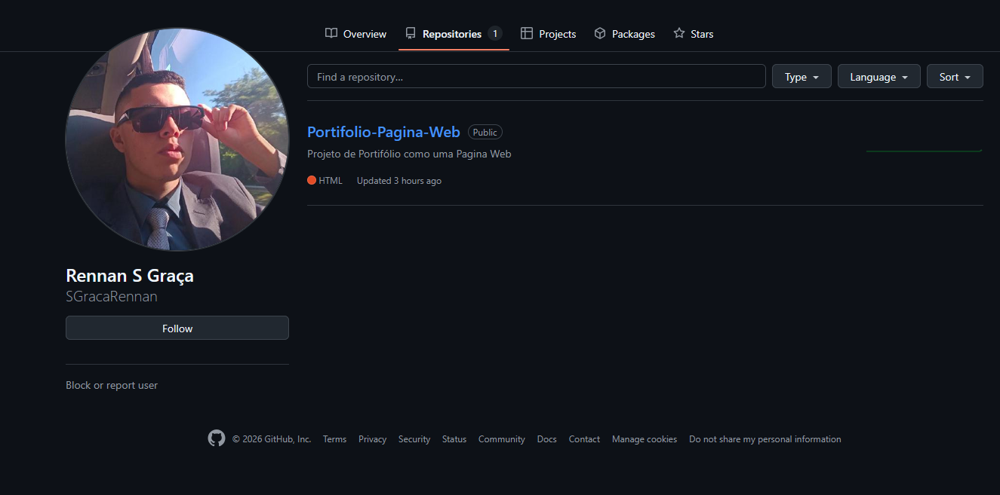

2024 - ...
Em meu GitHub, possuo repositórios com alguns projetos que estou constantemente trabalhando e refinando, a fim de exibir meu trabalho em cada uma dessas habilidades que listei.

GitHub:
Clique aqui para acessar!EXCLUSIVAMENTE ACADÊMICA — Estou em busca da primeira experiência profissional em tecnologia, pois até onde tenho estudado, tenho visto e aplicado em ambiente acadêmico os conhecimentos de desenvolvimento — web (HTML, CSS e JavaScript), back-end (C, Python e Java) e Banco de Dados (PostgreSQL); Além de conhecimentos mais gerais inerentes a tecnologia de informação, como os processos de desenvolvimento de softwares, gerencia de configuração, indicadores de desempenho em TI e arquitetura de sistemas, computadores e redes.
E-MAIL: rsgmailbox@gmail.com
TELEFONE: (22) 98134-0536
Sou um jovem estudante de engenharia de software, agricultor e técnico agropecuário na pequena propriedade rural da minha família. Nascido em 2006, atualmente resido em Sumidouro, um pequeno município no interior do Estado do Rio de Janeiro em que vivo desde sempre. Iniciei o processo de graduação em Engenharia de Software assim que me formei no Ensino Médio, em 2024, e tive a felicidade de ingressar na Estácio através do PROUNI com uma bolsa integral. Nunca atuei profissionalmente na área de TI, porém me considero um entusiasta da tecnologia que está na busca de uma oportunidade para praticar aquilo que venho aprendendo no curso - pois a teoria do ambiente acadêmico nunca deve andar em paralelo com as reais exigências do mercado e negócios. Dentre os meus gostos, eu tenho uma grande afinidade e conhecimento de hardware, por incluso costumo prestar auxílio técnico para computadores aonde vejo a oportunidade. Gosto bastante de utilizar sistemas no geral, tanto que minha vontade de cursar engenharia de software foi despertada a partir do desejo de compreender como funcionam, como fazer e como ter um sistema de sucesso: saber que há uma área de conhecimento que alinha-se perfeitamente com esse desejo é muito gratificante, pois terei a oportunidade de realizar um sonho pessoal alinhado às metas profissionais.